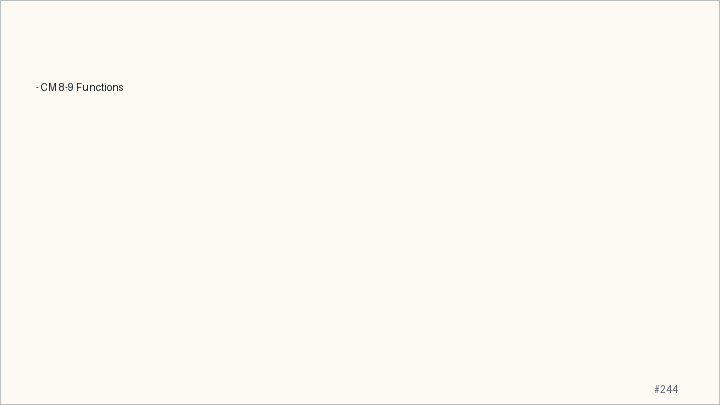

Main Path
- Start from the question: What moves during a function call?
- Build the model: C passes values; changing a caller object requires passing an address to that object.
- End with a checkable action: Students can explain stack frames, prototypes, array parameters, and
argc/argv. - Keep only this slide on the horizontal path during the live lecture.
